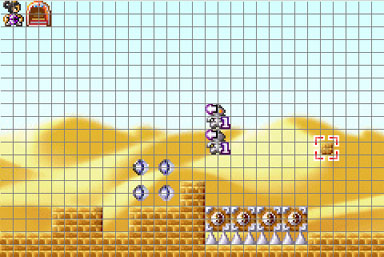

「陰陽童子物語」では、自分でマップを作って遊ぶことができます。
エディットモードで選べる選択肢は、以下のとおりです。新しくマップを作る
新規にマップを作成します。
マップのサイズ・背景は、自由に選べます。
ゲームをクリアしたセーブデータがあると、
選べる背景の種類が増えます。続きからマップを作る
保存したマップを、続きから作成します。
マップは１６個まで保存でき、保存したマップは
savedata_mapフォルダに保存されます。作ったマップをプレイする
自分で作ったマップをプレイします。
また、エディットマップのリプレイを見ることも出来ます。マップデータを消す
マップデータを消します。
savedata_mapフォルダの中のデータを、手動で消してもいいです。タイトルへ戻る
タイトルへ戻ります。
■■■ 画面構成 ■■■

■■■ 操作方法 ■■■
方向ボタン・・・カーソルを移動します。
ジャンプボタン・・・現在選択しているブロック・オブジェクト・
敵などを配置します。攻撃ボタン・・・選択している物を変更します。
メニューボタン・・・メニューを開き、各種変更を行います。
変更できる内容は、以下のとおりです。
配置 配置する物の種類を変更します。
「小さいブロック」、「大きいブロック」、「アイテム」、
「自分とオブジェクト」、「敵キャラクター」
の５種類があります。
例えば 小さいブロック を選択すると、
「床」、「レーザー透過床」、「針（４方向）」
を配置することができるようになります。スクロール
背景のスクロールの種類を
「無し」、「２重」、「同時」から選べます。グリッド
グリッドの表示・非表示を切り替えます。 マップを保存する
名前をつけて、マップを保存します。
すでに名前がついている場合は
上書き保存します。エディットを終了する
エディットを終了します。